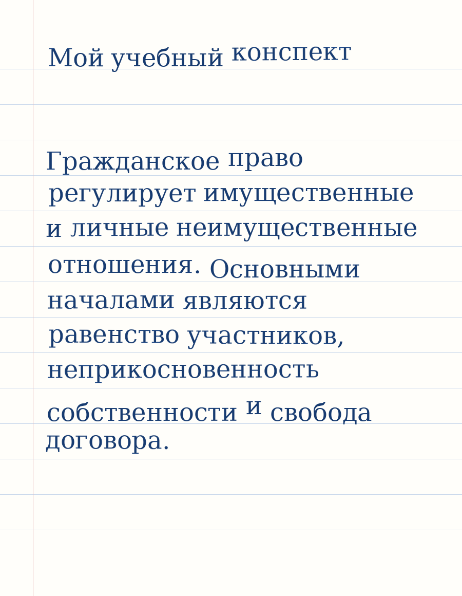

Бесплатная локальная программа
Генератор рукописного текста
Превратите текст из Word, DOCX или TXT в аккуратные страницы A4 с рукописным шрифтом. Настройте почерк, цвет чернил и бумагу, затем сохраните готовый документ в PDF.
- 10 русских почерков бесплатно
- Работает без интернета
- Текст остаётся на компьютере
- PDF готов к печати

Для учёбы и личных проектов
Один текст — несколько готовых форматов
Возможности
Не просто шрифт, а готовый документ
Word и обычный текст
Загрузите DOCX или TXT либо вставьте текст прямо в редактор.
Автоматические страницы A4
Строки переносятся, а длинный документ самостоятельно делится на страницы.
Десять русских почерков
От аккуратного конспекта до выразительного наклонного письма.
PDF и PNG
Скачайте единый PDF для печати или архив отдельных изображений.
Лист, линия или клетка
Выберите фон под конкретный конспект, карточку или упражнение.
Приватная обработка
Документы создаются локально и не отправляются в облачный сервис.
Три шага
От текста до печати за несколько минут
- 1Добавьте текст
Откройте DOCX, TXT или вставьте материал вручную.
- 2Настройте оформление
Выберите почерк, бумагу, поля и цвет чернил.
- 3Скачайте PDF
Проверьте страницы в предпросмотре и отправьте документ на печать.
Почему удобно
Чем программа отличается от текстового редактора
| Функция | Обычный редактор | Handwriting Print Studio |
|---|---|---|
| Рукописный шрифт | Зависит от ручной настройки | Выбор и загрузка шрифта |
| Естественная неровность | Нет | Настраивается |
| Линия и клетка | Нужно создавать фон | Включается одним выбором |
| Разбиение на A4 | Настраивается вручную | Автоматически |
| Экспорт | Зависит от программы | PDF и PNG |
Частые вопросы
Что нужно знать перед установкой
Можно ли перевести текст из Word в рукописный?
Да. Загрузите документ DOCX, выберите шрифт и сохраните готовые страницы в PDF.
Программа работает без интернета?
Да. После установки генерация документов выполняется локально на компьютере.
Можно ли использовать собственный почерк?
Бесплатная версия принимает готовый TTF или OTF. Создание шрифта по образцу планируется в PRO-версии.
Подходит ли результат для обычного принтера?
Да. Программа создаёт страницы A4 и многостраничный PDF, который можно распечатать стандартным способом.
Первая версия бесплатна
Подготовьте свой первый документ
Скачайте программу, выберите шрифт и получите готовый PDF.